|
Background Modeling for Outdoor
Surveillance |
|
|
Directed by Prof. Kwan-Yee K. Wong,
Collaborate with Zhanghui Kuang and Jacky Yuk(Both
of them are Ph.D
candidates at University of Hong Kong) |
|
|
Background modeling is the first
step for applications of surveillance. The outdoor
environment gives more challenges because background
is not as static as indoors. Swaying trees,
turbulent waves...require algorithms be capable of
dealing with multi-models.
One more thing is most of surveillance applications
need to run in real time.
A good algorithm should give good result,
while at the same time, with less computational
complexity and less memory needed. Recently LBP
draws a lot of attention because its effectiveness
and simplicity for background modeling. And some
variants such as LTP, SILTP make it
more powerful.
But usually histograms of LBP are used as patterns
for each pixel in the video frame, which is very
time-consuming. While LBP is not a ordinal
number considering its meaning, a typical PDF
can not be applied with it. Some a author used
KDE to model the pixel history as a PDF
by define a distance function between two LBPs.
We are inspired by that and trying to make it
simpler, more effective and less memory needed. |
|
|
|
|
|
Reconstruction of Display and Eyes from a Single Image |
|
|
Directed by Prof. Kwan-Yee K. Wong,
Collaborate with Dirk Schnieders (Ph.D
candidate at University of Hong Kong) |
|
|
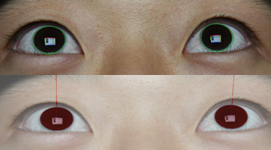 
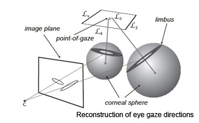 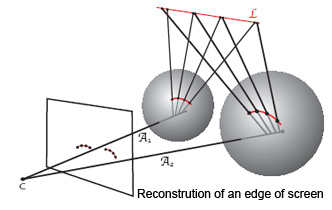
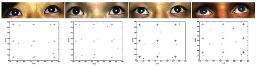
|
|
|
The project explores a new method for reconstructing
human eyes and visual display unit from reflections
on the cornea. This problem is difficult due to the
fact that the camera is not directly facing the
display, while captures just the eyes of a person in
front of the display. Reconstruction of eyes and
display is useful for point-of-gaze estimation,
which can be approximated from the 3D positions of
the iris and display. Iris boundaries and display
reflections on a single intrinsically calibrated
image provide enough information for such a
reconstruction.
Instead of improving accuracy of existing systems,
the project focus on exploring the possibility of an
eye gaze system can basically work with extremely
simplified hardware, setup and manipulation. At the
same time, without doing calibration for each
subject and bearing head movement.
The project includes two targets on basis of one
image:
1. Reconstruction of the eye gaze direction;
2. Reconstruction of the screen.
|
|
|
|
3D Dynamic Face Data Collection with
Multi Cameras |
|
|
Collaborate with Yuxiao Hu
(was a Ph.D candidate at UIUC, now joined Microsoft U.S.), Hao Tang (Ph.D
candidate at UIUC); Directed
by Prof. Thomas Huang |
|
|
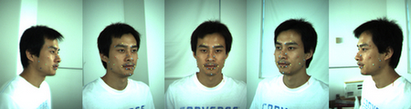 |
|
|
|
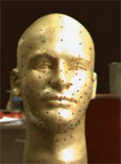 |
|
 |
|
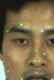 |
|
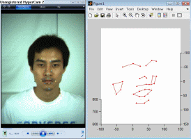 |
|
|
|
Some key points on human face are closely
related to expression changes. We aim to construct a
system prototype that can collect those key points'3D
movement information( instead of
reconstruct the 3D face model ). The
target of using this prototype is to create a
feature points based 3D human face database which is
a prior work to 3D expression recognition research. Another potential application is we can use the data
we collected to drive a 3D face model. Then a 3D
cartoon character could be more like some a movie
star instead of just voice when his or her
expression's changing.
In this prototype, five
synchronized cameras distributed in a half circle
(radius: 1 meter) construct four stereo vision
system groups to cover the whole face area 3D
measurement. Stick different colored markers
representing feature points on a subject's face.
Each of stereo vision group is in charge of markers
dynamic 3D reconstruction (in videos) in
corresponding fixed area and all the final data will
be transformed into a same world coordinate system.
For a marker, when the first frame comes, give it an
unique ID; then track it in the following frames
from two related cameras. The correspondence of this
marker in different videos can be kept all the way
for reconstruction in each frame. Considering the
good environment, Camshift method is used here for
tracking. In case tracking fails, to each
marker's tracking results (positions) in two
related cameras, apply epipolar line constraint to
decide if a warning will be triggered.
There are some key problems in this
project. |
|
|
- System design and setup including camera
synchronization, sensor selection based on
bandwidth limitation and etc.
- Multi-camera calibration and registration.
- Finding correspondence for each marker (Marker
tracking) .
|
|
|
Something maybe useful to you:
Download PDF roughly introduces the
project
Download five-camera calibration and
registration tool for Matlab
Download five-camera calibration and
registration document |
|
|
Industrial 3D Vision Measurement (3D
Scanner) |
|
|
Directed by Prof. Pingjiang Wang, Prof. Xiaoqi
Tang, Prof Jihong Chen
Sponsored by Guangdong Rational Precision
Instrument Co., Ltd |
|
|
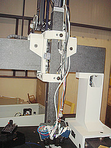
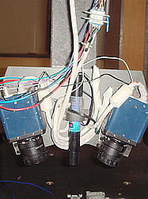
|
|
|
We mount a self-made probe, which consists of
two synchronized cameras and a beam laser generator,
on a machine tool to make it equipped with non-touch
3D vision measuring function. There is a
contradiction between measuring speed and 3D
data density. we need to
design different plans based on various requirements
in different cases to coordinate the image shooting,
image processing, 3D reconstruction and machine tool
movement control. |
|
|
|
3D Realistic Portrait Data
Acquisition for
Laser Carving |
|
|
Directed by Prof. Pingjiang Wang, Prof. Xiaoqi
Tang, Prof Jihong Chen
Sponsored by National Natural Science Foundation
(ID: 50175033) and Dongguan Science
Technology Museum |
|
|
 |
|
|
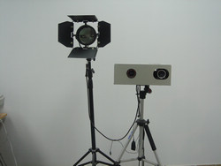
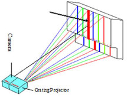
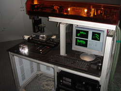 |
|
|
its main research content can be
described as acquisition of 3D
realistic portrait data. That also means we need to
find answers to such a question: how to use rapid,
efficient, portrait-suitable measuring method,
instrument and corresponding data processing method
to get accuracy enough and realistic 3D portrait
data. The word "realistic" here does not mean how
vivid the reconstructed 3D face model is, while
means how real and natural the 3D portrait points in
a glass cube look like.
A grating-projection style 3D measurement instrument which
carefully considers the featured requirements of
human face 3D measurement is designed and
constructed. It is based on camera and projector
(light planes) calibration, incorporation of
computer vision and structured light. To a 2D point
in a grating strip, a 3D line can be constructed
based on the camera's intrinsic and extrinsic
parameters; Also a 3D plane can be decided by
checking out the point is in which strip as well as
in which light plane; Then the intersection of the
line and the plane is just the expected 3D point coordinate.
The instrument is not only capable of doing the 3D measuring,
but also designed to meet the requirement of getting
3D realistic portrait points. It controls and
coordinates the camera, projector and the lighting
instrument to take two consequent photos on a
subject in a very short time: the first one with
grating projected to the subject's face for
collecting 3D information; the second one with
normal lighting , without grating projected, for
collecting grayscale information.
If the original 3D points are carved directly in a glass cube
with laser, the portrait does not look real and
natural. However, we can use the first photo to
collect original 3D points and reconstruct the
corresponding 3D face model; then project all white
pixels of the dithered second photo to the face
model. The new-generated 3D points will make the
portrait carved in a class cube not only
three-dimensional but also look natural. |
|
|
|
|
|
Projects based on GIS (before
2004) |
|
|
Directed by Prof. Xincai Wu |
|
|
- Mining management and plan for The Ministry
of Land and Resources, P.R.C
- Land utilization management for department of Land and
Resources, Qinhuangdao
- Official files transferring for department of Land
and Resources, Chuxiong
|
|
|
|
|
|
|
|
|
|